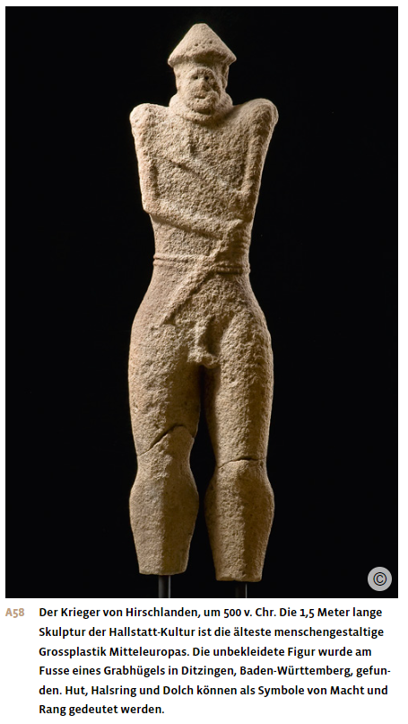
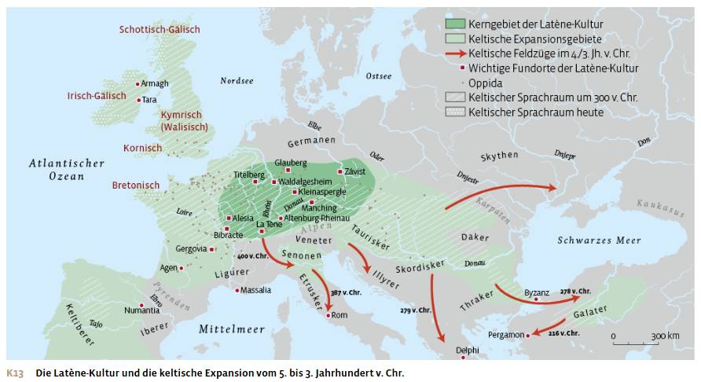
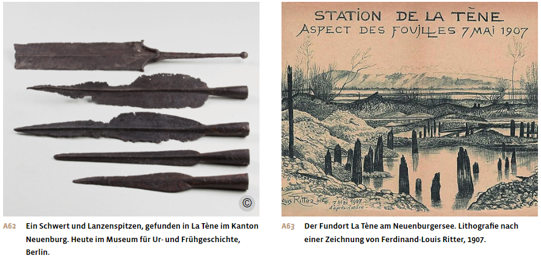
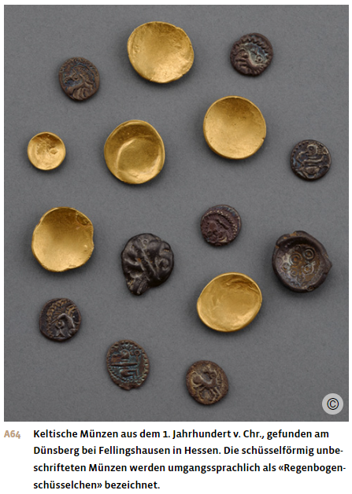
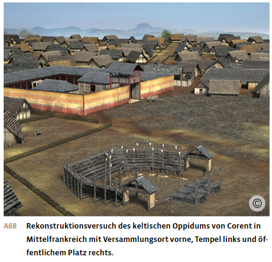
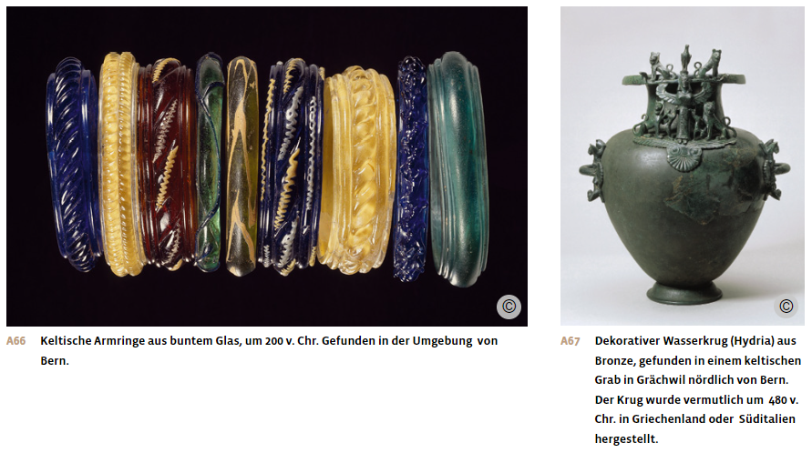

Materialdossier: Die Kelten
Vollständiger Inhalt des Unterrichtsdossiers · Die Kelten.docx
Europa verwendet Bronze und Eisen
Die frühe Eisenzeit
Fürsten, Salzherren und Bauern: die Hallstatt-Kultur
Zunächst blieb in Europa Bronze das vorherrschende Metall, insbesondere für Schmuck und Gefässe. Im Laufe des 8. Jahrhunderts v. Chr. gewann jedoch das Eisen an Bedeutung, vor allem für die Herstellung von Waffen und Geräten und zum Beschlagen von Wagenrädern.
In dieser frühen Eisenzeit, die etwa bis ins 5. Jahrhundert v. Chr. dauerte, gab es in Europa verschiedene Kulturen. In Mitteleuropa und auf den Britischen Inseln war die Hallstatt-Kultur am weitesten verbreitet. Ihr Name leitet sich vom Gräberfeld von Hallstatt (bedeutet «Salzstadt») im österreichischen Salzkammergut ab. Dort wurde bei Ausgrabungen einer der grössten prähistorischen Friedhöfe Mitteleuropas entdeckt. Von den über tausend Gräbern waren die meisten mit reichen Grabbeigaben ausgestattet. Schmuckstücke aus verschiedenen Teilen Europas zeugen von den weitreichenden Kontakten der Menschen von Hallstatt. Grundlage für den Wohlstand und die Handelsbeziehungen waren die dortigen Salzvorkommen, die seit der Bronzezeit im Bergbau gewonnen wurden und zu den ergiebigsten in Europa zählten. Salz war in den meeresfernen Gebieten knapp und galt als wichtiges Handelsgut. Es diente der Konservierung von Lebensmitteln und wurde auch in der Viehhaltung, Gerberei und Metallverarbeitung eingesetzt. In der Eisenzeit stieg der Bedarf an Salz und das «weisse Gold» war so begehrt, dass es auch als Zahlungsmittel diente.
Die Hallstatt-Zeit war eine dynamische Epoche, in der sich die Siedlungsweise, die Kunst und allgemein die Gesellschaft und Wirtschaftsweise stark veränderten. Dies spiegelt sich auch in den Grab- und Bestattungssitten wider. Mit dem Aufkommen der Hallstatt-Kultur kehrte man von der Urnenbestattung zur Errichtung von Grabhügeln zurück. Die Verstorbenen wurden oft in hölzernen Grabkammern beigesetzt. Diese Kammer wurden mit Steinen abgedeckt und darüber ein Erdhügel aufgeschüttet. Manchmal errichtete man zudem auf dem Hügel eine Steinstele als eine Art Grabstein. Funde von Rasiermessern und Nagelschneidern in Männergräbern weisen auf die Bedeutung der Körperpflege in dieser Zeit hin. Sowohl Männer als auch Frauen wurden mit Tongeschirr und Ringschmuck bestattet. Auch Fibeln, eine Art Sicherheitsnadel zum Zusammenhalten der Kleidung, wurden in diesen Gräbern erstmals in Mitteleuropa gefunden.
Die Grabhügel der hallstattzeitlichen Fürsten zeichneten sich durch eine besonders monumentale Bauweise und durch die Beigabe von Prestigeobjekten aus. Dazu gehören vierrädrige Wagen, Bronzegeschirr, Importgüter aus dem Mittelmeerraum sowie goldene Arm- und Halsringe.
Entlang der Handelswege entstanden befestigte Siedlungen, in denen regionale Fürsten residierten. Diese importierten griechische Keramik und griechischen Wein, der in Amphoren geliefert wurde. Der Wein stammte grösstenteils aus der um 600 v. Chr. gegründeten griechischen Kolonie Massalia, dem heutigen Marseille, und gelangte über das Rhonetal und das Burgund in die Zentren der hallstattzeitlichen Kultur in Mitteleuropa. Diese Luxusgüter waren der Oberschicht vorbehalten. Das galt auch für mediterrane Liegemöbel mit kunstvoll gedrechselten Beinen und für exotische Früchte wie Feigen.
Die Menschen der Hallstatt-Kultur importierten aus den osteuropäischen Steppen nördlich des Schwarzen Meeres eine neue Pferderasse, die grösser und schneller war. Gleichzeitig erfuhr die Bewaffnung der hallstattzeitlichen Krieger eine Neuerung: Sie benutzten nun eiserne Langschwerter. Da diese über einen Meter lang waren, eigneten sie sich kaum für den Fusskampf. Vielmehr wird vermutet, dass es sich um eine Reiterwaffe handelte, zumal in den Gräbern ihrer Besitzer häufig Pferdegeschirr gefunden wurde. Diese Langschwerter sind eine eigenständige Entwicklung der Hallstatt-Kultur, die Reiterkrieger Osteuropas und Asiens kannten sie nicht.

Die Kelten in der späten Eisenzeit
Grundzüge der Latène-Kultur
Die mitteleuropäische Hallstatt-Kultur wurde ab dem 5. Jahrhundert v. Chr. allmählich von der Latène-Kultur verdrängt. Diese ist nach dem Ort La Tène im Kanton Neuenburg benannt. Dort wurden Mitte des 19. Jahrhunderts in einem Moorgebiet am Neuenburgersee, das während der Eisenzeit unter Wasser stand, rund 2’500 Eisenobjekte gefunden. Diese sind jünger als die der Hallstatt-Kultur und wurden offensichtlich als Opfergaben im See versenkt. Während der Latène-Zeit verdrängte das Eisen innerhalb weniger Generationen zunehmend die Bronze als Werkstoff.
Die Menschen der Latène-Kultur werden oft als Kelten bezeichnet. Die keltische Bevölkerung, die im heutigen Frankreich siedelte, wird auch als Gallier bezeichnet, die keltische Bevölkerung, die auf dem Gebiet der heutigen Schweiz lebte, als Helvetier. Es handelt sich aber um dieselbe Kultur. Die Kelten sind das erste Volk nördlich der Alpen, das in einer schriftlichen Quelle namentlich erwähnt wird. Im 6. Jahrhundert v. Chr. berichteten die griechischen Geschichtsschreiber Hekataios und Herodot über die Kelten. Sie hatten aber offenbar nur ungenaue Vorstellungen von ihrem Siedlungsgebiet, das grosse Teile Mitteleuropas umfasste.
Charakteristisch für die keltische Latène-Kultur ist die künstlerische Gestaltung von Gegenständen und Skulpturen. Während man in der Hallstatt-Zeit vor allem geometrische Figuren verwendete, wurden diese in der Latène-Zeit durch pflanzliche Motive und menschliche Darstellungen ersetzt. Häufig wurden auch Fabelwesen, Fratzen und Dämonen abgebildet. Viele Darstellungen sind mehrdeutig. So lassen sich in Pflanzenmotiven bei genauem Hinsehen manchmal Gesichter erkennen. Schädeltrophäen auf Türpfosten sollten vermutlich Unheil abwehren.
In der frühen Latène-Kultur wurde die hallstattzeitliche Bestattungstradition mit Grabhügeln fortgesetzt. Viele dieser Gräber enthielten nun reichen Goldschmuck sowie etruskische und griechische Keramik und Metallgefässe. Höhergestellte Männer wurden im Grab als Krieger mit Helm, Lanze, Schild und Schwert ausgestattet. Erstmals tauchen auch leichte und wendige zweirädrige Streitwagen als Grabbeigaben auf, die vermutlich zu Lebzeiten der Verstorbenen im Kampf eingesetzt worden waren.

Expansion
Ab dem 4. Jahrhundert v. Chr. erschütterten grosse Wanderungsbewegungen keltischer Gruppen weite Teile Europas. Die Gründe für diese Wanderungen sind unklar. Missernten und Überbevölkerung, innenpolitische Unruhen und Kämpfe zwischen verschiedenen keltischen Gruppen sind ebenso mögliche Ursachen wie eine Verschlechterung des Klimas und die Anziehungskraft der reichen mediterranen Kulturen.
So breitete sich die keltische Latène-Kultur nach Westen, Osten und Süden aus. Gallische Gruppen eroberten und besiedelten Norditalien und unternahmen von dort aus Feldzüge weiter in Richtung Süden. Im Jahr 385 v. Chr. belagerten Kelten das römische Kapitol, die Fluchtburg der Stadt. Nach römischer Überlieferung rettete nur das Geschnatter wachsamer Gänse Rom vor der Eroberung. Im Jahr 335 v. Chr. besuchte eine keltische Delegation Alexander den Grossen. 279 v. Chr. plünderte eine keltische Gruppe Delphi, das berühmteste Heiligtum Griechenlands. Sie wurde jedoch darauf von makedonischen Truppen geschlagen und der Angriff auf die heilige Stätte beschädigte den Ruf der Kelten für lange Zeit. Zu Beginn des 2. Jahrhunderts v. Chr. zogen keltische Gruppen über den Bosporus nach Kleinasien.
Die Angriffe auf Rom und Delphi waren Teil kurzfristiger Beutezüge. Die Wanderungen der keltischen Gruppen waren aber nicht nur kriegerischer Natur. Oft strebten sie auch danach, sich dauerhaft in fremden Gebieten niederzulassen, weshalb sie vermutlich ihren gesamten Hausrat, Vorräte und Haustiere auf gedeckten Wagen mit sich führten. Diese Siedlungsabsichten führten zum Teil zu Konflikten mit der ansässigen Bevölkerung, der sie ihr Siedlungsgebiet streitig machten. Es gibt aber auch archäologische Hinweise, dass keltische Gruppen teilweise auch friedlich mit der einheimischen Bevölkerung zusammenlebten. Während sich einige keltische Gruppen in geeigneten Gegenden niederliessen, kehrten andere in ihre Heimat zurück. Die Wanderungsbewegung kam im Laufe des 3. Jahrhunderts v. Chr. nach mehreren Niederlagen zum Erliegen.
Die keltischen Kämpfer der Latène-Zeit waren meist mit einer Lanze und einem länglichen, bis zur Brust reichenden Schild aus Eisenblech ausgerüstet. Die wichtigste Waffe war aber das Schwert. Vermutlich trugen nur die Anführer Helme und Körperpanzer aus Metall. Antike Autoren beschreiben oft den keltischen Furor, die Kampfeswut, die vor der Schlacht durch Lärm, Drohungen und Kriegsgesänge geschürt wurde. Das sollte den Gegner einschüchtern und die eigene Kampfeslust anstacheln. Die Kelten galten als wilde Kämpfer und wurden oft auch als Söldner angeheuert. War ein keltischer Angriff jedoch erfolglos, brach die Heeresordnung oft zusammen und die Soldaten flohen oder ergaben sich.

Wirtschaft und Handel
Die Kelten waren die erste Kultur Mitteleuropas, die eigene Münzen prägte. Angeregt durch die hellenistischen Münzen, die im 3. Jahrhundert v. Chr. von keltischen Söldnern aus dem Süden mitgebracht wurden, imitierten sie Goldmünzen mit dem Porträt Philipps von Makedonien auf der Vorderseite und einem Wagengespann auf der Rückseite. Sogleich begann auch die Falschmünzerei, bei der ein Bronzekern mit Silber oder Gold überzogen und geprägt wurde, ohne dass die Münze vollständig aus Edelmetall bestand.
Funde von Luxusgütern zeugen von intensiven Kontakten zwischen den keltischen Kulturen und dem Süden. Wein wurde in grossen Mengen in den Norden verkauft, wie zahlreiche Amphorenfunde belegen. Auch Fischsauce, eine Spezialität der damaligen mediterranen Welt, war im Norden sehr beliebt. Daneben finden sich häufig aus dem Süden importierte Trinkgefässe aus glänzender Keramik und farbigem Glas.
Die Kelten betrieben in weiten Teilen Europas einen regen Eisenhandel. Auch gab es auf Eisenverarbeitung spezialisierte Siedlungen, denn der Bedarf an dem neuen Metall war gross. So benutzte die keltische Bevölkerung Pflugscharen und Sensen aus Eisen, die die Aussaat und das Mähen des Getreides in Bodennähe wesentlich erleichterten. Das mit der Sense geschnittene Stroh erwies sich als ausgezeichnetes Winterfutter für das in Ställen gehaltene Vieh. Die Kelten setzten auch eine Drehmühle ein, die die Verarbeitung grösserer Getreidemengen ermöglichte. Diese landwirtschaftlichen Innovationen waren wichtig für die Entstehung der keltischen Städte, denn ohne sie wäre die Ernährung der dortigen Bevölkerung nicht möglich gewesen.

Oppida – die keltischen Städte
Die keltischen Städte werden mit dem lateinischen Begriff Oppidum (Plural: Oppida) bezeichnet, der Stadt oder Befestigung bedeutet. Die Städte waren Knotenpunkte der Wirtschaft und des Kultes, oft auch Zentren der Eisen- und Keramikproduktion, der Glasverarbeitung, der Münzprägung und des Handwerks.
Zwischen dem späten 2. und dem 1. Jahrhundert v. Chr. waren die Oppida von England bis Ungarn weit verbreitet, weshalb diese Epoche vor der römischen Besetzung als Oppida-Zivilisation bezeichnet wird. In Gallien westlich des Rheins waren die Oppida meist durch Befestigungen gekennzeichnet, die Caesar als «Murus Gallicus» («gallische Mauer») bezeichnete. Sie bestanden aus übereinander gestapelten Holzrahmen, die mit Steinen und Erde aufgefüllt wurden, wobei die Vorderseite der Mauer mit Steinen verkleidet war. Der Holzbedarf für eine solche Befestigung, die eine Länge von fünf bis zehn Kilometern erreichen konnte, war enorm.
Die Ausdehnung der Oppida ist sehr unterschiedlich. Manche erstreckten sich über mehr als 1000 Hektar und waren flächenmässig viel grösser als die mittelalterlichen Städte. In diesen Zentren sammelte sich die Bevölkerung aus einem weiten Umkreis, und während ihres Bestehens entstanden kaum weitere Siedlungen in ihrer Nähe. Es ist unklar, ob diese Konzentration der Bevölkerung auf instabile Zeiten und akute Bedrohungen zurückzuführen war oder ob die Menschen die Vorteile solcher Siedlungen nutzen wollten. Möglicherweise ging es den Herrschenden auch darum, die Kultur mediterraner Grossstädte nachzuahmen oder ihre Macht zu demonstrieren, indem sie ihre Untertanen um sich scharten.

Oppida wurden oft strategisch günstig auf Hügeln oder in Flussschleifen angelegt. Sie standen am Anfang der Entwicklung der Städte in Mitteleuropa. In der Schweiz gehen etwa Zürich (Turicum), Lausanne (Lousonna) oder Genf (Genava) auf ein keltisches Oppidum zurück. Im Zentrum standen wie in den römischen und griechischen Städten öffentliche Gebäude wie Tempel und Marktplatz. Entlang der Hauptstrasse befanden sich Werkstätten. Viele Oppida können jedoch nicht als vollständige Städte bezeichnet werden, da sie nur locker besiedelt waren. Den Hauptteil der Bebauung bildeten oft Bauernhöfe, und sogar Ackerflächen waren innerhalb der Mauern zu finden. So blieben diese Siedlungen trotz ihrer Zentrumsfunktion stark bäuerlich geprägt. Selbst die grossen Oppida hatten nicht mehr als 10000 Einwohnerinnen und Einwohner.
Religion und Mythen
Aus griechischen und römischen Quellen weiss man einiges über die keltische Religion, aber vieles bleibt im Dunkeln. Die keltische Bevölkerung glaubte an die Unsterblichkeit der Seele. Die vermutlich regional unterschiedlichen Gottheiten wurden in heiligen Hainen verehrt, in denen auch Feldzeichen und Beute aufbewahrt wurden. Wenn Gebrauchsgegenstände oder Waffen geopfert wurden, zerstörte man sie vorher. Diese Massnahme verringerte vermutlich nicht nur die Gefahr des Diebstahls, sondern signalisierte auch, dass die Gegenstände für den Menschen nicht mehr zu gebrauchen waren und nun den Gottheiten gehörten. Auch Tiere und sogar Menschen wurden geopfert. In den heiligen Hainen wurden zum Teil quadratische Tempel aus Holz, in römischer Zeit auch aus Stein errichtet. Noch heute sind keltische Viereckschanzen aus dem 2. und 1. Jahrhundert v. Chr. im Gelände sichtbar, wobei unklar ist, ob sie religiösen Kulten dienten oder Überreste von Gutshöfen sind.
Die Kulte wurden von den Druiden geleitet. Sie waren nicht nur Priester, sondern auch Richter, Gelehrte und Lehrer. Sie gehörten zur Oberschicht und genossen Privilegien wie die Befreiung von Steuern und Militärdienst. Obwohl es heilige Stätten gab, an denen nur Frauen Opfer darbrachten, sind Druidinnen erst in römischer Zeit belegt – und dann offenbar in der Funktion von Wahrsagerinnen.
Die keltischen Mythen wurden nur mündlich überliefert und erst ab dem 11. Jahrhundert von christlichen Mönchen niedergeschrieben. Welche Elemente aus der Latène-Zeit stammen und welche später hinzukamen, ist daher unklar.
Der Niedergang der keltischen Zivilisation
Ab 100 v. Chr. befand sich die Welt der Oppida im Niedergang. Wein aus dem Mittelmeerraum gelangte kaum noch in den Norden. Alteisen wurde zunehmend rezykliert, die bis dahin blühende Eisenproduktion kam zum Erliegen. Die Oppida verloren ihre Märkte, statt Geldwirtschaft wurde wieder Tauschwirtschaft betrieben und die keltische Münzprägung eingestellt. Die Bevölkerung ging zurück.
Gleichzeitig unternahmen germanische Gruppen wie die Kimbern und Teutonen vermehrt Raubzüge. So wurde die spätkeltische Oppida-Zivilisation von mehreren Seiten bedrängt: Während die Germanen von Norden her vorstiessen, drangen die Römer von Süden her vor. Nachdem diese bereits im 3. Jahrhundert die keltischen Gebiete Oberitaliens erobert hatten, folgten im 2. und 1. Jahrhundert weitere Teile Galliens.
Im Jahr 58 v. Chr. besiegte der römische Feldherr Gaius Iulius Caesar die Helvetier und 51 v. Chr. die letzten gallischen Stämme. Im Jahr 15 v. Chr. schliesslich überschritten römische Legionen den Rhein und eroberten unter Kaiser Augustus die keltischen Gebiete bis zur Donau. Mit der römischen Besetzung endete in Mitteleuropa endgültig die schriftlose Vorgeschichte.

Aus: Notz, Thomas; Frey, Walter (Hg.): Geschichte fürs Gymnasium. Steinzeit bis 1450. Bern 2024, S. 118-122.
Aufträge
1. Was sind Merkmale der Hallstatt-Kultur?
2. Wie haben sich die Kelten von der Hallstatt- zur Latène-Kultur weiterentwickelt?
3. Worin unterscheidet sich die keltische Gesellschaft, Kultur und Wirtschaft von früheren Siedlern in derselben Region? Was ist neu?
4. Erkläre die Bedeutung des «weissen Goldes».
5. Die Kelten gelten als Meister der Eisenverarbeitung. Was waren keltische Innovationen und weshalb waren sie wichtig?
6. Weshalb lebten die Kelten in Oppida? Welche Erklärung erscheint dir plausibel?
7. Welche Funktionen und Privilegien besassen die Druiden in der keltischen Gesellschaft?
8. Wie beschreiben die griechischen und römischen Quellen die Kelten? Nenne Unterschiede und Gemeinsamkeiten. Was fällt in den Beschreibungen auf?
9. Welches sind aus Sicht des Prähistorikers Müller die besonderen Merkmale der keltischen Kunst?
10. Im schottischen Glasgow benennt sich ein berühmter Fussballverein nach den Kelten. Suche weitere moderne Bezugnahmen auf die Kelten. Was sind die Motive dieser Erinnerungskultur?
11. Welche Merkmale definieren eine Hochkultur? Warum ist das Konzept der Hochkultur umstritten?
12. Handelt es sich bei den Kelten um eine Hochkultur? Welche Kriterien sprechen dafür – welche dagegen?
Ergänzende Materialien
Der griechische Geschichtsschreiber Diodorus Siculus im 1. Jahrhundert v. Chr. über die Kelten
Sie [die Gallier] gebrauchen es [das Gold] als Schmuck, nicht nur die Frauen, sondern auch die Männer. Sie tragen Bänder um die Handwurzel und den Arm, auch dicke Halsketten aus reinem Gold und grosse Fingerringe, sogar goldene Harnische. Auffallend und bemerkenswert ist das Benehmen der oberländischen Kelten gegenüber den Heiligtümern der Götter. In den Tempeln und den heiligen Plätzen, die man hin und wieder antrifft, liegt viel Gold umher, das den Göttern geweiht ist, und die Furcht vor ihnen ist so gross, dass keiner der Eingeborenen es anrührt, obgleich die Kelten sonst äusserst geldgierig sind.
Die Gallier haben einen hohen Wuchs, einen kräftigen Körper und eine weisse Haut. Ihre Haare sind nicht bloss von Natur aus gelb, sondern sie suchen diese eigentümliche Farbe durch künstliche Mittel noch zu erhöhen. Sie salben nämlich das Haar beständig mit Kalkwasser und streichen es von der Stirne zurück gegen den Scheitel und den Nacken, so dass sie fast wie Satyrn [in der griechischen Mythologie ein Dämon] und Pane [der Hirtengott] aussehen. Denn durch diese Behandlung wird das Haar so dick, dass es völlig einer Rossmähne gleicht. Den Bart scheren einige ab; andere lassen ihn ein wenig wachsen. Die Vornehmen scheren den Backenbart, aber den Kinnbart lassen sie stehen, sodass er den Mund bedeckt. Daher kommt er ihnen beim Essen zwischen die Speisen, und das Getränk fliesst wie durch einen Weiher hinein. Sie speisen alle sitzend, aber nicht auf Stühlen, sondern auf dem Boden, wobei ihnen Wolfs- oder Hundsfelle als Unterlage dienen. Die Aufwärter bei Tische sind Knaben und Mädchen, die eben aus den Kinderjahren treten. Neben dem Tisch stehen die Herde, wo ein starkes Feuer brennt zwischen Kesseln und Bratspiessen, die mit grossen Stücken Fleisch voll gesteckt sind. Tapfere Männer erhalten zur Auszeichnung die schönsten Stücke Fleisch.
Zitiert nach: Wurm, Julius Friedrich (Hg.): Diodor’s von Sicilien historische Bibliothek, Fünftes Buch, Stuttgart 1831, S. 524–525. Rechtschreibung und Sprache leicht modernisiert.
Der römische Feldherr Gaius Iulius Caesar über die Kelten, 58 v. Chr.
Gesamtgallien ist gegliedert in drei Teile. Einen bewohnen die Belger, den zweiten die Aquitaner, den dritten das in der Landessprache Kelten, bei uns Gallier genannte Volk. Sie alle unterscheiden sich in Sprache, Einrichtungen und Gesetzen. Die Gallier trennt von den Aquitanern die Garunna, von den Belgern die Matrona und die Sequana. Von all diesen sind die Belger die tapfersten, weil sie von der Verfeinerung und Kultur unserer Provinz am weitesten entfernt sind, nur ganz selten Kaufleute zu ihnen kommen und verweichlichende Waren einführen, auch weil sie nächste Nachbarn der Germanen rechts des Rheins sind, mit denen sie ständig Krieg führen. Aus diesem Grund sind auch die Helvetier tapferer als die übrigen Gallier, da sie fast täglich in Gefechte mit den Germanen verwickelt sind, indem sie diese von ihren Grenzen abwehren oder selbst in deren Land Krieg führen. Der Teil, den, wie gesagt, die Gallier bewohnen, beginnt beim Rhodanus, ist begrenzt von der Garunna, dem Ozean und dem Land der Belger, berührt bei den Sequanern und Helvetiern auch den Rhein und zieht sich nach Norden. Das Belgerland beginnt an der Grenze von Gallien, reicht bis zum Niederrhein und liegt gegen Nordosten. Aquitanien reicht von der Garunna bis an die Pyrenäen und den spanischen Ozean; es liegt nach Nordwesten.
Bei den Helvetiern war Orgetorix bei weitem der vornehmste und reichste Mann. Dieser zettelte im Konsulatsjahr des Marcus Messala und Marcus Piso aus Gier nach der Königsherrschaft eine Verschwörung des Adels an und überredete den Stamm, mit der gesamten Habe sein Gebiet zu verlassen: Da sie an Tapferkeit alle überragten, sei es ein Kinderspiel, ganz Gallien zu unterwerfen. Dazu beredete er sie um so leichter, als die Helvetier überall durch natürliche Grenzen eingeengt sind, auf der einen Seite durch den sehr breiten und tiefen Rhein, der das Helvetierland von Germanien trennt, auf der anderen durch den sehr hohen Jura, der zwischen dem Sequanerland und Helvetien verläuft, auf der dritten Seite durch den Lemanner See und den Rhodanus, der unsere Provinz von den Helvetiern trennt.
Zitiert nach: Gaius Iulius Caesar: Der Gallische Krieg, herausgegeben, übersetzt und erläutert von Otto Schönberger, Berlin 2013, S. 6–7.
Der Schweizer Prähistoriker Felix Müller 2012 über die Kunst der Kelten
[…] so finden wir tatsächlich gerade in der antiken keltischen Kunst oft diese Verspieltheit, die den Betrachter im Ungewissen darüber lässt, ob das, was er wahrnimmt, auch wirklich so ist, wie er es zu sehen glaubt. Dahinter verbirgt sich eine Denkweise in ungewohnten Kategorien: Für Griechen und Römer nicht weiter beachtenswert, da eh barbarisch, für viele Menschen der heutigen Zeit jedoch ein höchst faszinierender Ausgangspunkt zu eigenen esoterischen Weltanschauungen.
Keltische Kunst ist ebenso schwer deutbar, wie die Kelten selber fassbar sind. Die Kelten kannten keine Geschichtsschreibung, welche die Geschehnisse aus ihrer eigenen Sicht hätte schildern können. Darin teilen sie ihr Los mit andern so genannten Randvölkern der Antike. Die einzigen schriftlichen Informationen, die wir heute besitzen, stammen aus griechischen und römischen Quellen. Und da die Kelten den Barbaren zugerechnet wurden, hatten sie kaum je eine Chance, das Interesse auf sich zu lenken oder gar eine faire Würdigung ihrer Kultur zu erfahren. Während Jahrhunderten waren sie sogar höchst gefährliche Kontrahenten von Griechen wie Römern und gerieten schon deshalb in der antiken Geschichtsschreibung zu einem Feindbild schlechthin.
Unsere Kenntnisse über die Verhältnisse nördlich der Alpen stammen zum überwiegenden Teil aus der vorgeschichtlichen Archäologie. Diese hat in den letzten Jahrzehnten grosse Fortschritte erzielt durch umsichtige, systematische Ausgrabungen. Mit Hilfe von naturwissenschaftlichen Methoden wurde die Datierung gefestigt und verfeinert. Vermehrt wurde der Verbreitung von Phänomenen, wie zum Beispiel Schmucktypen, Waffenformen oder Zierarten, Beachtung geschenkt. Was jedoch hinter einem auf diese Weise definierten Verbreitungsbild wirklich steckt, ist nach wie vor in den meisten Fällen ein Rätsel. Handelt es sich um das Absatzgebiet eines bestimmen Produkts oder um den Einzugsbereich einer sozialen Gruppe, eines «Stammes»? Oder ist das eine gar immer deckungsgleich mit dem andern? Oder widerspiegelt sich darin eine überregionale Verhaltensweise? Zum Beispiel die Sitte einer Grabbeigabe, ohne die wir von einem bestimmten Schmucktyp gar keine Kenntnis hätten?
Für die Deutung von genau beobachteten archäologischen Befunden können wir uns mit Analogieschlüssen aus den gleichzeitig existierenden antiken Hochkulturen behelfen. Dass rege Kontakte von den Zentren zur Peripherie und umgekehrt stattgefunden haben, zeigt sich alleine schon in der keltischen Kunst, die viele Vorbilder und entscheidende Anstösse aus der griechischen Kulturwelt bezogen hat.
Zitiert nach: Müller, Felix: Die Kunst der Kelten, München 2012, S. 9–11.